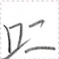
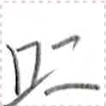

← Previous
Index
Next →
English: This wall is very high.
Chinese: 这堵墙很高。
Chinese (pinyin): Zhè dǔ qiáng hěn gāo.
Pekzep (latin transcription): ka1 co1 kit sue1.
Pekzep (hanzi transcription): 此壁極高。
Pekzep (linzklā):  



Analysis:
| ka1 | 此 | | noun-modifier | | this |
| co1 | 壁 | | noun | | wall |
| kit | 極 | | verb-modifier | intensifier | very much |
| sue1 | 高 | | verb | | to be tall, to be high |